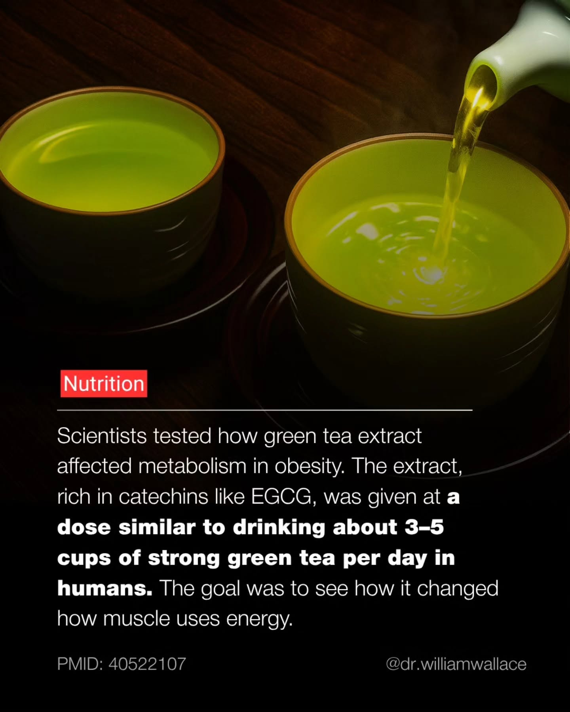
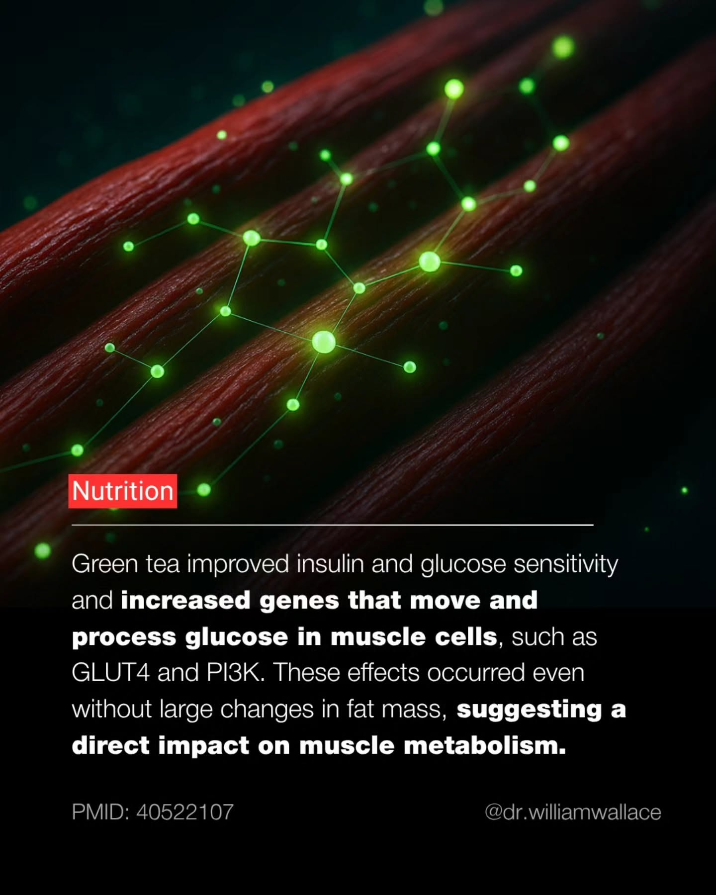
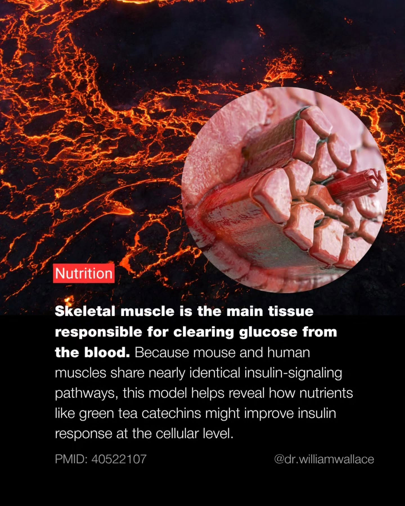
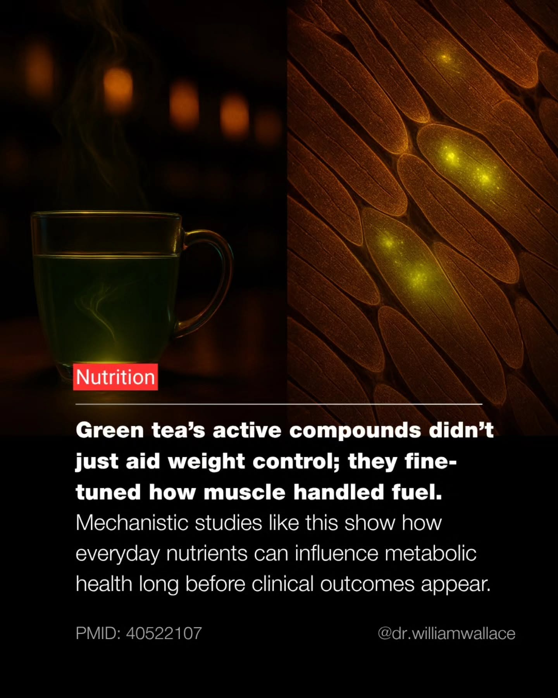

Green tea’s metabolic benefits go beyond “fat burning”. It directly reprograms muscle metabolism to improve insulin sensitivity (studied under “human-like conditions” in this study).
This is the first study to show that green tea improves muscle insulin sensitivity even without thermogenic stress.
A 2025 study in Cell Biochemistry & Function tested whether green tea could enhance metabolism in obese mice kept at thermoneutrality (a condition that mimics human room temperature). Most mouse studies are run at cooler lab temps, which forces constant heat production and hides the true metabolic effects of interventions. Studying at thermoneutrality removes this “cold bias,” revealing what the compound itself is doing.
Study Design:
Male mice were fed a high-fat diet for 16 weeks. After 4 weeks, one group received green tea extract standardized to catechins (equivalent to 2-5 cups of tea for a human, approximately) for 12 weeks.
Findings:
Muscle adaptation
Green tea enlarged muscle fibers and increased expression of slow-contracting myosin, suggesting improved muscle efficiency without activating atrophy pathways.
Lipid metabolism
Muscle tissue showed higher activity of enzymes and transporters that move and process fatty acids, alongside increased markers of mitochondrial biogenesis (PGC-1α).
At the same time, enzymes involved in ceramide synthesis were reduced, protecting against lipid-driven insulin resistance.
Glucose handling
Green tea improved insulin and glucose tolerance and raised expression of genes that control insulin signaling (insulin receptor, AKT) and glucose uptake (GLUT4).
Fasting blood glucose normalized toward healthy levels.
Energy enzymes
Increased lactate dehydrogenase activity and creatine kinase expression indicated greater energy turnover and ATP recycling capacity in muscle.
Mechanism:
By directly improving how muscle uses fat and glucose, not by raising heat output, green tea enhanced systemic insulin sensitivity in obese mice.
⚠️ Limitations:
Male mice only; transcriptional changes may not reflect protein abundance; animal doses exceed typical human intake.




